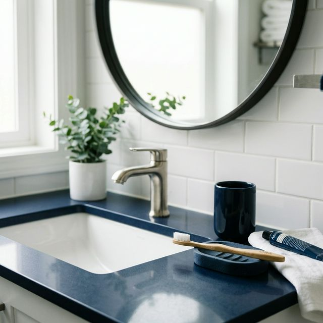

The Hidden Danger In Your Bathroom — And The Safer, Smarter Way To Brush

Sarah M., 34, never thought her morning routine was making her family sick.
As a health-conscious mother of two young children, she prided herself on doing everything right. She bought organic groceries, invested in high-end water filters, and made sure everyone in the house used premium oral care products. Her family's health was her top priority.
But despite her best efforts, her kids kept getting colds and ear infections every few weeks. It seemed like someone in the house was always battling a sore throat or a runny nose. When she took them to the pediatrician, the doctor would always shrug it off, saying, "It's just going around, kids get sick."
Sarah couldn't accept that answer. She knew her family was doing everything exactly the way they were supposed to. There had to be a hidden source—something she was missing.
One evening, while doing her meticulous bathroom cleaning routine, she picked up her toothbrush and noticed it smelled musty. She rinsed it under hot water, as she always did, but the smell lingered. That was the moment she realized something was deeply wrong.
The Invisible Threat in the Bathroom
Determined to find answers, Sarah started researching bathroom bacteria. What she discovered made her stomach drop. She learned about something known as the "toilet plume." Every time a toilet is flushed, an invisible mist of microscopic waste particles is launched up to 6 feet into the air. And these particles can stay suspended in the airborne mist for up to 30 minutes.

Sarah looked at where her family's toothbrushes were stored. They were sitting right in the landing zone of this invisible vortex.
But that wasn't even the worst part. She learned that a damp toothbrush is the perfect breeding ground for these pathogens. Bacteria double every 20 minutes on a moist surface. By morning, a single germ from last night's flush has become millions.
She realized with horror that they weren't just storing their toothbrushes in this environment—she was actively brushing her family's teeth with millions of bacteria every single morning.
"I felt sick to my stomach," Sarah explained. "We were doing everything right—except this. The very tool we were using to stay healthy was making us sick."
Desperate Attempts to Fix the Problem
Immediately, Sarah went into problem-solving mode. Her first instinct was to buy plastic toothbrush covers. But she quickly realized they made the problem worse. The closed caps trapped moisture, creating a dark, damp incubator. Within days, she found black mold spots growing inside the covers.
Next, she started replacing everyone's brushes weekly. But this became an expensive habit that didn't solve the root problem. A brand-new brush was contaminated within hours of sitting in the bathroom. Replacing it was a temporary fix.
She tried hydrogen peroxide soaks, but it was messy, degraded the bristles rapidly, and the habit was impossible to maintain every single day, especially with two kids.
Even premium mouthwash wasn't the answer. She realized the mouthwash cleaned her mouth, but not the brush she was about to put back in her mouth tomorrow. "I was spending more money trying to fix the problem than I'd ever spent on toothbrushes before," Sarah noted. "Nothing actually worked."
The Breakthrough Discovery
The turning point happened when her friend Jessica came over for coffee. Jessica immediately noticed Sarah's stressed expression and asked what was wrong. Exhausted, Sarah explained her deep dive into toothbrush bacteria research and her failure to find entirely clean oral care solutions.
Jessica laughed warmly and pulled out her phone. She showed Sarah a neat, wall-mounted device she had ordered three months prior: a UV toothbrush sterilizer from a company called Oraly.
"I haven't had a cold since I started using this," Jessica told her. "Neither have my kids. It's been a total game-changer for our family."
Sarah was skeptical but intrigued. She needed actual science, not just a gadget. Jessica explained that the Oraly device uses UV-C light at exactly 253.7nm. This is the exact same technology that hospitals use to sterilize surgical equipment. It doesn't just wash the bacteria—it completely destroys their DNA so they cannot survive or reproduce.
Week by Week: The Oraly Experience
Week 1: Sarah ordered the Oraly sterilizer, and it arrived quickly. Set up was dead simple; she had it wall-mounted in the bathroom in 5 minutes using the included adhesive strips. The dual-brush chamber fit both her kids' brushes perfectly alongside her own. When she closed the door, a blue UV-C glow activated automatically. The next morning, she picked up her brush. It smelled completely neutral for the first time ever. "It sounds silly but I almost cried," she said. "My brush had never smelled like nothing before."
Week 2: Sarah realized the genius of the built-in automatic cycle. It runs every 4 hours, and the built-in fan dries the bristles completely, leaving no moisture for bacteria to regrow. Best of all, her kids stopped complaining about the "weird taste" from their toothbrushes. Sarah realized with pure disgust that the taste they had been complaining about for years was ACTUALLY bacterial contamination.
Week 3: The results spoke for themselves. Usually, by week 3 of any month, someone in the house was nursing a cold or an ear infection. But this month? Nobody got sick.
"I'm not saying it's a miracle cure," Sarah reflected. "But the pattern was undeniable. We finally stopped the cycle."
After 1 month: Following their healthiest doctor's check-up in years, Sarah didn't hesitate. She immediately ordered a second unit for the guest bathroom, along with Oraly's complete kit—including their highly-rated whitening powder and tongue scraper—for herself.
How Does Oraly Actually Work?
The secret behind Oraly's incredible effectiveness is its medical-grade UV-C light at the 253.7nm wavelength. This specific wavelength penetrates the cell walls of harmful bacteria, viruses, and pathogens.
Once inside, the UV-C light completely destroys the bacterial DNA. Without functioning DNA, bacteria cannot reproduce or form protective biofilms. Oraly doesn't just reduce bacteria. It doesn't mask the smell with chemicals. It forcibly eliminates them.
This is the exact same proven technology that hospitals have relied on for decades to sterilize surgical suites and critical care equipment. Furthermore, the built-in air-drying fan removes all moisture after every UV cycle, preventing any chance of bacterial regrowth.
Because the device auto-cycles every 4 hours, your toothbrush is always sterile and ready before you need it. There are no harsh chemicals, no strange residue, and absolutely no bad taste. Just a pure, clean brushing experience every single time.
More than 12,000 families are already using Oraly...
"Absolute peace of mind. As a parent, knowing my kids aren't sharing bathroom germs makes this worth
every penny. Easiest health upgrade we've made."
— Amanda T.
"I travel constantly for work and hotel bathrooms always grossed me out. The Oraly travel case is my
sterile sanctuary. Never leaving home without it."
— Mark D.
"With one shared bathroom for a family of four, our toothbrush situation was a nightmare. This keeps
everything organized, dry, and most importantly, totally clean."
— Jessica
R.
I tested Oraly myself, and here's what I found:
After researching Sarah's story, I had to see if Oraly lived up to the hype. I ordered a unit for my own master bathroom.
Week 1: Installation took seconds. The first thing I noticed was the visual proof—the blue UV glow kicking in when I shut the door gave me absolute confidence. The following morning, the bristles were dry to the touch and completely odorless. I genuinely hadn't realized how "used" a standard toothbrush feels until I tried a truly sanitized one.
Week 2: The "set it and forget it" convenience is unmatched. I never have to remember to turn it on; the 4-hour automatic cycle handles everything behind the scenes. I permanently stopped dreading whether my flush was compromising my hygiene.
Week 3: My teeth actually feel cleaner. Without re-introducing a thick bacterial biofilm into my mouth every morning, my expensive electric toothbrush is finally able to do its job properly. It's the health investment I never knew I desperately needed.
Final Thoughts
The Oraly Complete Kit regularly retails for $159. However, they are currently running an aggressive bundle promotion.
With their current offer, you receive free worldwide shipping and a 30-day money-back guarantee, making it completely risk-free to try in your own home.
I recommend Oraly to absolutely anyone who brushes their teeth twice a day and wants to genuinely know that their primary health tool is actually clean. It's time to stop brushing with yesterday's bacteria.

To check if Oraly is still available, click below.
- Centers for Disease Control and Prevention (CDC). "Toilet Plume and Environmental Contamination."
- American Dental Association (ADA). "Toothbrush Care: Cleaning, Storing and Replacement."
- National Institutes of Health (NIH). "The Oral Microbiome and Systemic Health."
- Journal of Hospital Infection. "Performance of ultraviolet-C in healthcare settings."
- Clinical Microbiology Reviews. "Bacterial Doubling Time and Growth on Moist Surfaces."
- American Journal of Infection Control. "Efficacy of Hospital UV Disinfection."
- Journal of Clinical Periodontology. "Biofilm Formation on Toothbrush Bristles."
- Photochemistry and Photobiology. "UV-C Wavelength and DNA Disruption Mechanisms."